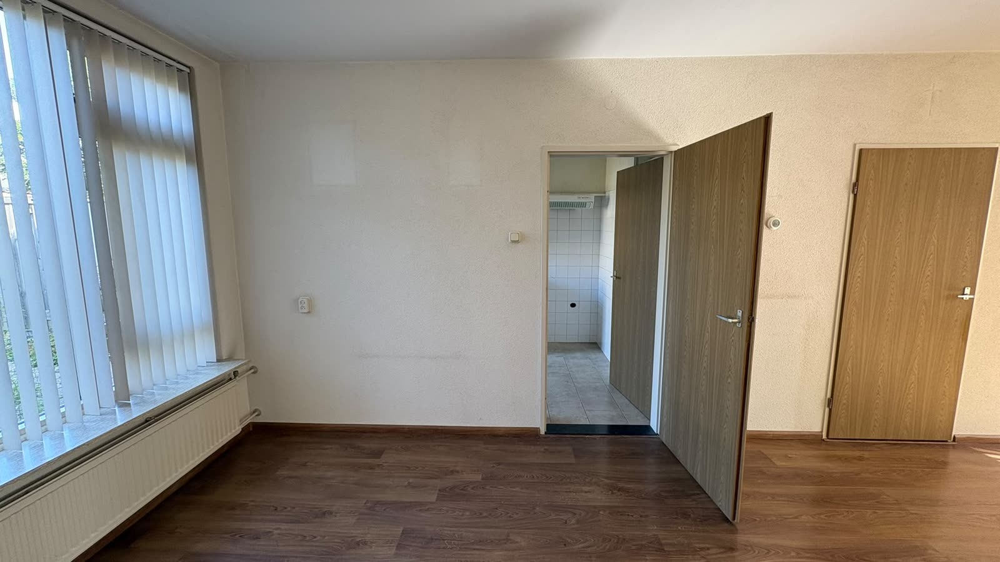
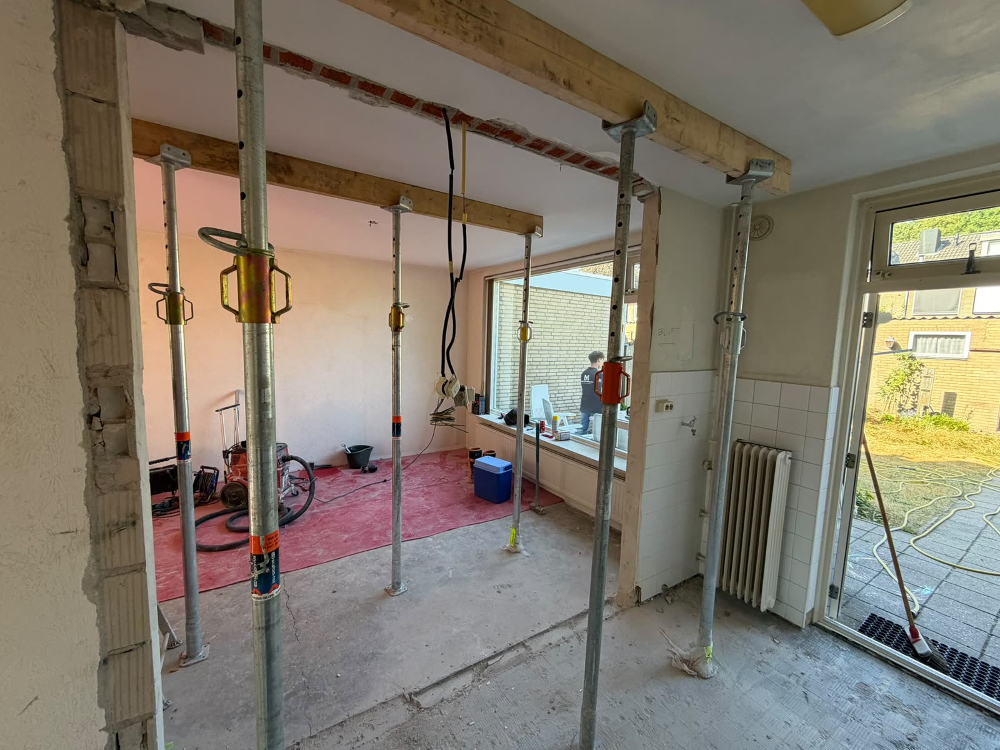
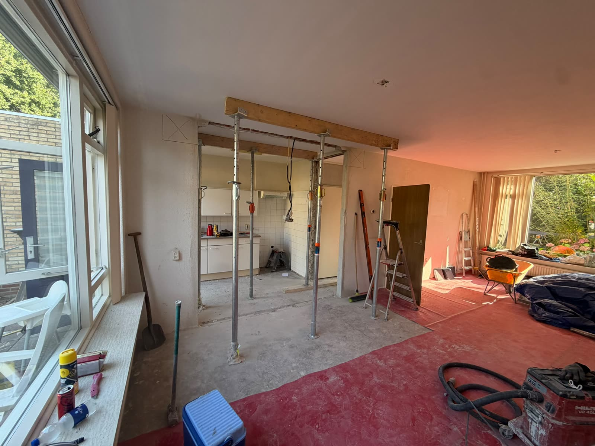
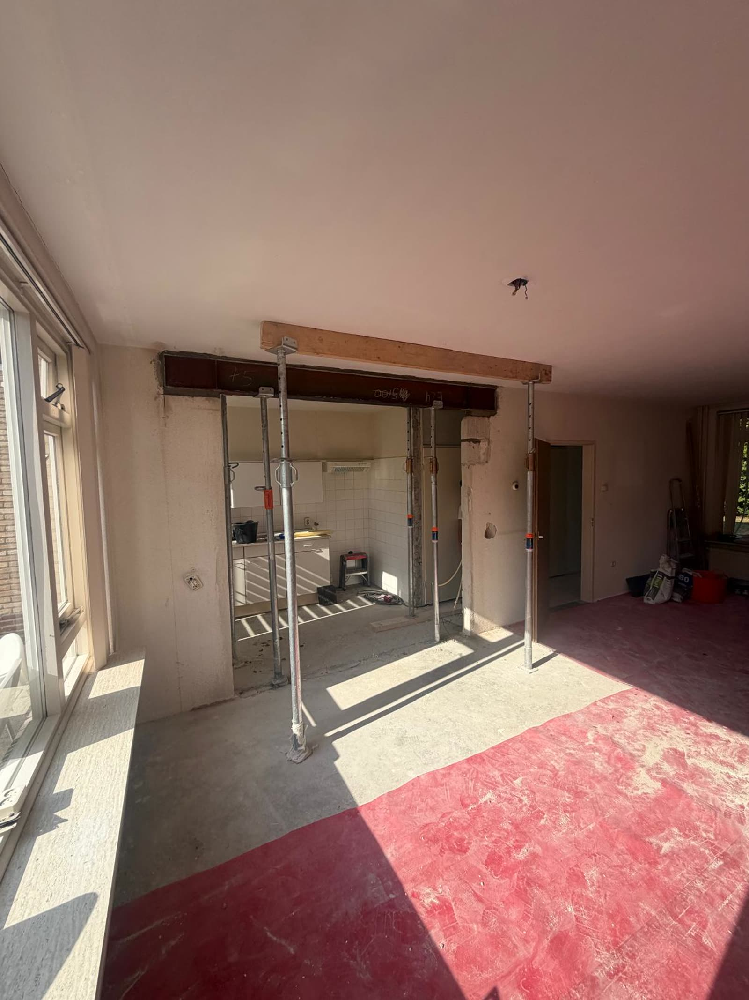
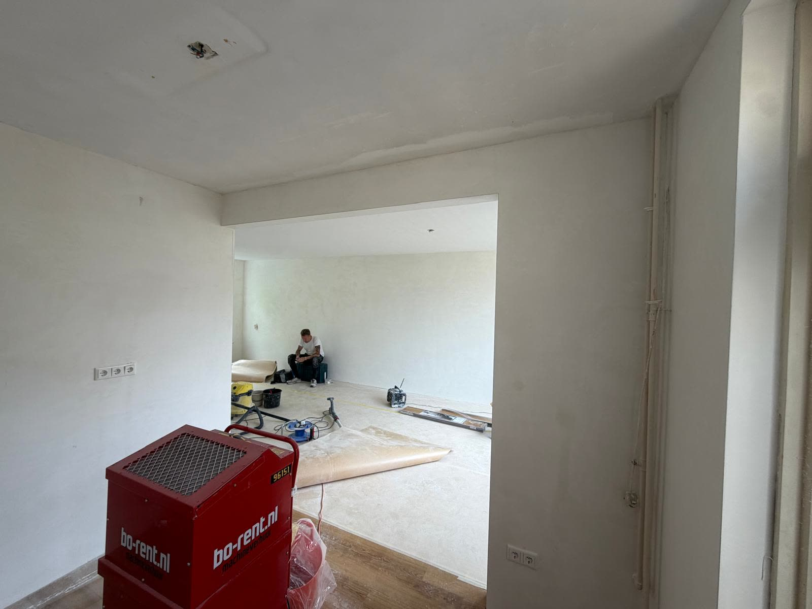

De feiten
- Woning: tussenwoning uit 1972, in een blok van zes
- Vrije opening: 2,52 meter
- Geplaatst staal: IPE 240 in S235, rekenoverspanning 2,87 meter
- Oplegging: 350 mm aan elke kant, op het bestaande metselwerk
- Traject: tekenwerk en berekening, stempelen, zagen, plaatsen en afwerken
Het verhaal
De muur droeg de verdiepingsvloer, en uit de oorspronkelijke kaptekening van 1971 bleek dat ook de gordingen van het dak erop uitkwamen. De ligger zelf was daarom niet het lastige deel. Na de doorbraak komt het gewicht dat eerst over de hele muur verdeeld was op twee plekken samen: op het metselwerk naast de opening en op de fundering daaronder. Die zijn apart nagerekend.
De bewoners wilden de opening zo breed mogelijk, en dus het stuk muur dat blijft staan zo smal mogelijk. Juist dat stuk vangt de ligger op. Het plan is onderweg drie keer gewijzigd, en bij elke wijziging is de berekening opnieuw meegegaan. Naast de opening bleef uiteindelijk een smal penant staan, met in de berekening de maat die het minstens moet hebben.
Hoe het stempelen en zagen in het algemeen gaat, lees je bij dragende muur stutten en draagmuur slopen.